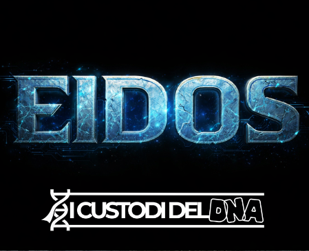
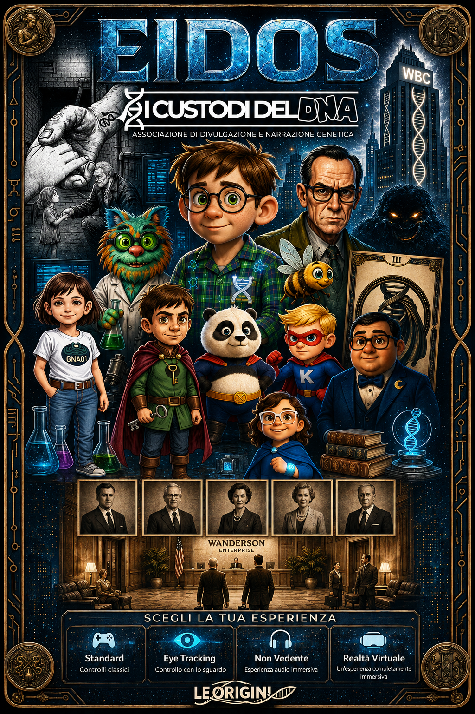
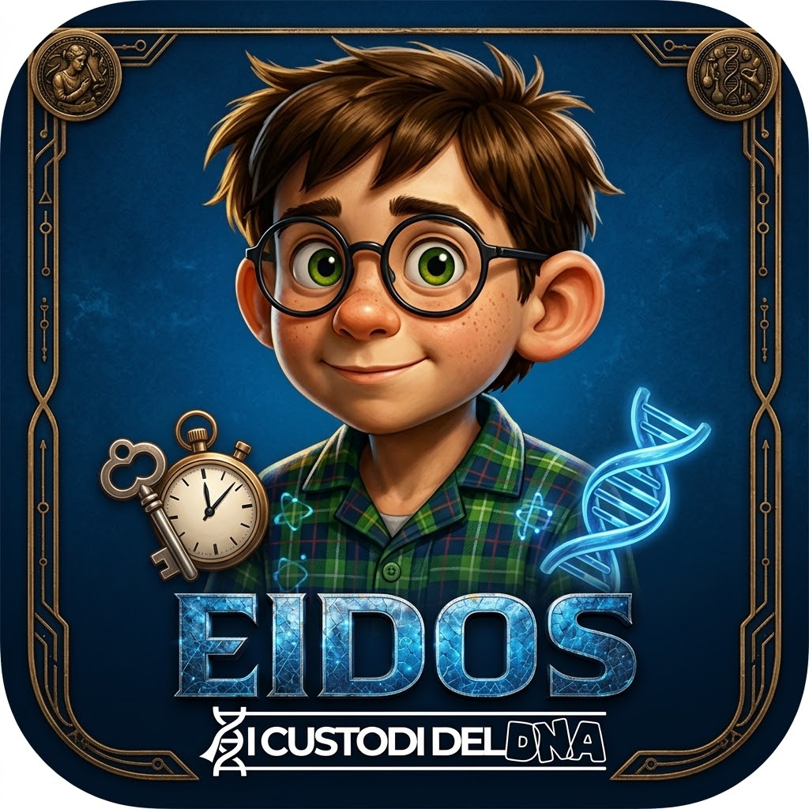
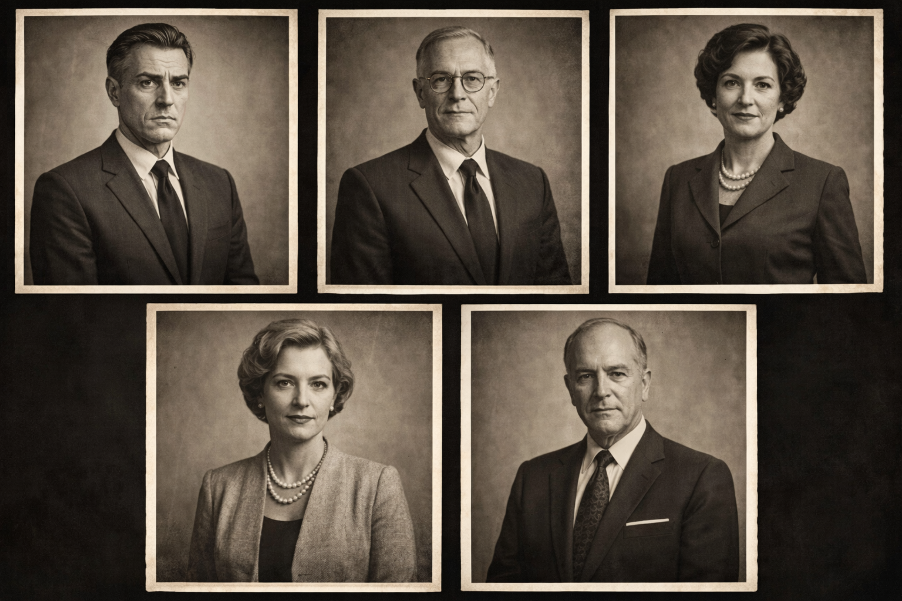

I Custodi del DNA
Capitolo: EIDOS
Un videogioco 3D narrativo e accessibile che ti fa vivere la disabilità in prima persona. Sei un Custode del DNA: esci dalla Fondazione Grunert e ritrova gli altri.
Ogni filamento racconta una storia. Qualcuno deve ricordarla.
I Custodi del DNA
Capitolo: EIDOS — capire la disabilità giocando.
Un videogioco 3D narrativo e accessibile che non racconta la disabilità: te la fa vivere in prima persona. Percepisci il mondo come lo percepisce il tuo personaggio.

Il problema non è il personaggio. È un mondo progettato male per lui.
Non “che tristezza avere una disabilità”, ma: è un altro modo di stare al mondo, con le sue fatiche e le sue ricchezze.
Esci dalla Fondazione Grunert. Ritrova gli altri Custodi.
Sei un Custode del DNA: un bambino con una sindrome genetica rara, trattenuto nella Fondazione Grunert. Guidato da NightGene e dagli altri Custodi, dovrai uscire, ritrovare i tuoi simili e scoprire la verità su ciò che è stato fatto — e su ciò che è davvero.
Ogni Custode incarna una condizione diversa. Liberarli uno a uno significa attraversare modi diversi di stare al mondo: ogni Custode apre un nuovo capitolo e un nuovo punto di vista.
L'accessibilità è il cuore del progetto, non un accessorio.
Ogni Custode ha un filtro percettivo.
Effetti visivi, sonori e di controllo che cambiano come percepisci il mondo e come ci interagisci. Fanno sentire la fatica di ciò che per gli altri è automatico.
Il suono è una meccanica
Audio spaziale 3D per orientarsi, voce narrante per descrizioni e scelte, e un paesaggio sonoro che cambia con lo stato emotivo del personaggio: calmo, sovraccarico, in panico. Sottotitoli sempre presenti.
Co-progettato con chi vive la condizione
Ogni meccanica è validata con l'associazione I Custodi del DNA, con le famiglie e con figure cliniche e pedagogiche, per rendere l'esperienza in modo autentico e rispettoso — mai caricaturale.
Gioco e fumetto
I Custodi del DNA è una saga che vive tra videogioco e fumetto; EIDOS è uno dei suoi capitoli. Ogni capitolo è legato a un Custode e a una sindrome o condizione.


Documenti declassificati
Fotografie recuperate dagli schedari della Wanderson. Alcune mostrano la storia ufficiale. Altre, quella che l'azienda ha provato a dimenticare.
Dietro le porte della Wanderson
Come è nato EIDOS: dalla prima idea al mondo della torre WBC, fino ai personaggi e alle immagini dell'archivio.
Il progetto raccontato dall'interno: scelte, dubbi e dietro le quinte.
Fonti e riferimenti
Elenco delle fonti citate nel documentario, in ordine alfabetico: autore, anno, titolo e link.
Chi decide dentro la torre

Hai trovato qualcosa nell'archivio?
Per stampa, collaborazioni o informazioni su EIDOS, scrivici. Rispondiamo a ogni messaggio.